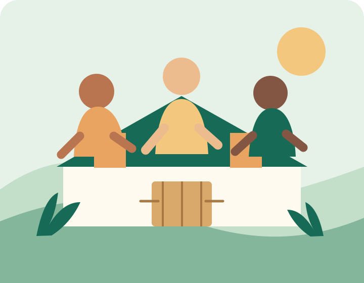

Alimento e cuidado
Mobilizamos doações e redes de apoio para responder a necessidades essenciais no território.
Uma rede de cuidado na comunidade
Aproximamos pessoas, recursos e oportunidades para apoiar famílias e fortalecer comunidades.

Quem somos
A Mãos que Transformam é uma organização da sociedade civil fictícia, criada para este projeto acadêmico. Sua proposta é mobilizar pessoas em ações de segurança alimentar, educação e apoio comunitário.
Acreditamos que uma rede local forte começa com escuta, respeito e oportunidades para que cada pessoa possa contribuir.
Veja como atuamosComo atuamos
Mobilizamos doações e redes de apoio para responder a necessidades essenciais no território.
Criamos encontros de leitura, troca de saberes e apoio ao desenvolvimento de crianças e jovens.
Conectamos vizinhos e parceiros para construir soluções próximas e duradouras.
Toda contribuição conta
Estamos por aqui
Tem uma ideia, dúvida ou parceria em mente? Será um prazer conversar.
E-mail
contato@maosquetransformam.org.br
Telefone
(11) 3000-1234
Endereço
Rua da Solidariedade, 100
São Paulo — SP